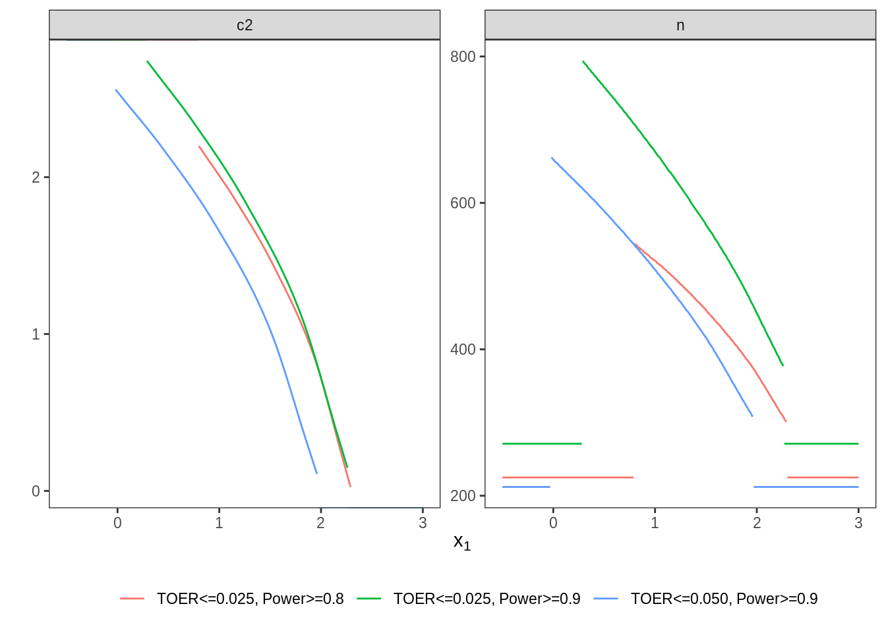

5 Scenario IV: smaller effect, point prior
5.1 Details
In this scenario, we return to point priors as investigated in
Scenario I.
The main goal is to validate adoptr’s sensitivity with regard to
the assumed effect size and the constraints on power and type one error rate.
Therefore, we still assume a two-armed trial with normally distributed outcomes. The assumed effect size under the alternative is \(\delta = 0.2\) in this setting. Type one error rate is protected at \(2.5\%\) and the power should be at least \(80\%\). We will vary these values in the variants IV.2 and IV.3
5.2 Variant IV-1: Minimizing Expected Sample Size under Point Prior
5.2.1 Objective
Expected sample size under the alternative point prior \(\delta = 0.2\) is minimized.
5.2.2 Constraints
No additional constraints are considered in this variant.
5.2.3 Initial Design
For this example, the optimal one-stage, group-sequential, and generic
two-stage designs are computed.
The initial design that is used as starting value of optimization is defined
as a group-sequential design by the package rpact that fulfills
type one error rate and power constraints in the case of group-sequential and
two-stage design.
The initial one-stage design is chosen heuristically.
The order of integration is set to \(5\).
5.2.4 Optimization
5.2.5 Test Cases
Firstly, it is checked whether the maximum number of iterations was not exceeded in all three cases.
tbl_designs %>%
transmute(
type,
iterations = purrr::map_int(tbl_designs$optimal,
~.$nloptr_return$iterations) ) %>%
{print(.); .} %>%
{testthat::expect_true(all(.$iterations < opts$maxeval))}## # A tibble: 3 x 2
## type iterations
## <chr> <int>
## 1 one-stage 20
## 2 group-sequential 915
## 3 two-stage 2207Now, the constraints on type one error rate and power are tested via simulation.
tbl_designs %>%
transmute(
type,
toer = purrr::map(tbl_designs$optimal,
~sim_pr_reject(.[[1]], .0, datadist)$prob),
power = purrr::map(tbl_designs$optimal,
~sim_pr_reject(.[[1]], .2, datadist)$prob) ) %>%
unnest() %>%
{print(.); .} %>% {
testthat::expect_true(all(.$toer <= alpha * (1 + tol)))
testthat::expect_true(all(.$power >= min_power * (1 - tol))) }## Warning: `cols` is now required.
## Please use `cols = c(toer, power)`## # A tibble: 3 x 3
## type toer power
## <chr> <dbl> <dbl>
## 1 one-stage 0.0251 0.799
## 2 group-sequential 0.0250 0.800
## 3 two-stage 0.0250 0.800Due to increasing degrees of freedom, the expected sample sizes under the
alternative should be ordered as ‘one-stage > group-sequential > two-stage’.
They are evaluated by simulation as well as by evaluate().
tbl_designs %>%
mutate(
ess = map_dbl(optimal,
~evaluate(ess, .$design) ),
ess_sim = map_dbl(optimal,
~sim_n(.$design, .2, datadist)$n ) ) %>%
{print(.); .} %>% {
# sim/evaluate same under alternative?
testthat::expect_equal(.$ess, .$ess_sim,
tolerance = tol_n,
scale = 1)
# monotonicity with respect to degrees of freedom
testthat::expect_true(all(diff(.$ess) < 0)) }## # A tibble: 3 x 5
## type initial optimal ess ess_sim
## <chr> <list> <list> <dbl> <dbl>
## 1 one-stage <OnStgDsg> <adptrOpR> 392 392
## 2 group-sequential <GrpSqntD> <adptrOpR> 324. 323.
## 3 two-stage <TwStgDsg> <adptrOpR> 319. 319.Furthermore, the expected sample size under the alternative of the
optimal group-sequential design should be lower than for the
group-sequential design by rpact that is based on the inverse normal
combination test.
tbl_designs %>%
filter(type == "group-sequential") %>%
{ expect_lte(
evaluate(ess, {.[["optimal"]][[1]]$design}),
evaluate(ess, {.[["initial"]][[1]]})
) }Finally, the \(n_2\) function of the optimal two-stage design is expected to be monotonously decreasing:
5.3 Variant IV-2: Increase Power
5.3.1 Objective
The objective remains expected sample size under the alternative \(\delta = 0.2\).
5.3.2 Constraints
The minimal required power is increased to \(90\%\).
5.3.3 Initial Design
For both flavours with two stages (group-sequential, generic two-stage)
the initial design is created by rpact to fulfill the error rate constraints.
5.3.4 Optimization
5.3.5 Test Cases
We start checking if the maximum number of iterations was not exceeded in all three cases.
tbl_designs_9 %>%
transmute(
type,
iterations = purrr::map_int(tbl_designs_9$optimal,
~.$nloptr_return$iterations) ) %>%
{print(.); .} %>%
{testthat::expect_true(all(.$iterations < opts$maxeval))}## # A tibble: 3 x 2
## type iterations
## <chr> <int>
## 1 one-stage 30
## 2 group-sequential 1349
## 3 two-stage 2988The type one error rate and power constraints are evaluated by simulation.
tbl_designs_9 %>%
transmute(
type,
toer = purrr::map(tbl_designs_9$optimal,
~sim_pr_reject(.[[1]], .0, datadist)$prob),
power = purrr::map(tbl_designs_9$optimal,
~sim_pr_reject(.[[1]], .2, datadist)$prob) ) %>%
unnest() %>%
{print(.); .} %>% {
testthat::expect_true(all(.$toer <= alpha * (1 + tol)))
testthat::expect_true(all(.$power >= min_power_2 * (1 - tol))) }## Warning: `cols` is now required.
## Please use `cols = c(toer, power)`## # A tibble: 3 x 3
## type toer power
## <chr> <dbl> <dbl>
## 1 one-stage 0.0251 0.900
## 2 group-sequential 0.0249 0.900
## 3 two-stage 0.0250 0.900Due to increasing degrees of freedom, the expected sample sizes under the
alternative should be ordered as ‘one-stage > group-sequential > two-stage’.
This is tested by simulation as well as by evaluate().
tbl_designs_9 %>%
mutate(
ess = map_dbl(optimal,
~evaluate(ess, .$design) ),
ess_sim = map_dbl(optimal,
~sim_n(.$design, .2, datadist)$n ) ) %>%
{print(.); .} %>% {
# sim/evaluate same under alternative?
testthat::expect_equal(.$ess, .$ess_sim,
tolerance = tol_n,
scale = 1)
# monotonicity with respect to degrees of freedom
testthat::expect_true(all(diff(.$ess) < 0))
testthat::expect_true(all(diff(.$ess_sim) < 0))}## # A tibble: 3 x 5
## type initial optimal ess ess_sim
## <chr> <list> <list> <dbl> <dbl>
## 1 one-stage <OnStgDsg> <adptrOpR> 525 525
## 2 group-sequential <GrpSqntD> <adptrOpR> 405. 405.
## 3 two-stage <TwStgDsg> <adptrOpR> 397. 397.Comparing with the inverse-normal based group-sequential design created
by rpact, the optimal group-sequential design should show
a lower expected sample size under the point alternative.
tbl_designs_9 %>%
filter(type == "group-sequential") %>%
{ expect_lte(
evaluate(ess, {.[["optimal"]][[1]]$design}),
evaluate(ess, {.[["initial"]][[1]]})
) }Since a point prior is regarded, the \(n_2\) function of the optimal two-stage design is expected to be monotonously decreasing:
5.4 Variant IV-3: Increase Type One Error rate
5.4.1 Objective
As in variants IV.1 and IV-2, expected sample size under the point alternative is minimized.
5.4.2 Constraints
While the power is still lower bounded by \(90\%\) as in variant II, the maximal type one error rate is increased to \(5\%\).
5.4.3 Initial Design
Again, a design computed by means of the package rpact to fulfill
the updated error rate constraints is applied as initial design for the
optimal group-sequential and generic two-stage designs.
5.4.4 Optimization
5.4.5 Test Cases
The convergence of the optimization algorithm is tested by checking if the maximum number of iterations was not exceeded.
tbl_designs_5 %>%
transmute(
type,
iterations = purrr::map_int(tbl_designs_5$optimal,
~.$nloptr_return$iterations) ) %>%
{print(.); .} %>%
{testthat::expect_true(all(.$iterations < opts$maxeval))}## # A tibble: 3 x 2
## type iterations
## <chr> <int>
## 1 one-stage 27
## 2 group-sequential 1124
## 3 two-stage 2833By simulation, the constraints on the error rates (type one error and power) are tested.
tbl_designs_5 %>%
transmute(
type,
toer = purrr::map(tbl_designs_5$optimal,
~sim_pr_reject(.[[1]], .0, datadist)$prob),
power = purrr::map(tbl_designs_5$optimal,
~sim_pr_reject(.[[1]], .2, datadist)$prob) ) %>%
unnest() %>%
{print(.); .} %>% {
testthat::expect_true(all(.$toer <= alpha_2 * (1 + tol)))
testthat::expect_true(all(.$power >= min_power_2 * (1 - tol))) }## Warning: `cols` is now required.
## Please use `cols = c(toer, power)`## # A tibble: 3 x 3
## type toer power
## <chr> <dbl> <dbl>
## 1 one-stage 0.0502 0.900
## 2 group-sequential 0.0500 0.900
## 3 two-stage 0.0502 0.900Due to increasing degrees of freedom, the expected sample sizes under the
alternative should be ordered as ‘one-stage > group-sequential > two-stage’.
They are tested by simulation as well as by calling evaluate().
tbl_designs_5 %>%
mutate(
ess = map_dbl(optimal,
~evaluate(ess, .$design) ),
ess_sim = map_dbl(optimal,
~sim_n(.$design, .2, datadist)$n ) ) %>%
{print(.); .} %>% {
# sim/evaluate same under alternative?
testthat::expect_equal(.$ess, .$ess_sim,
tolerance = tol_n,
scale = 1)
# monotonicity with respect to degrees of freedom
testthat::expect_true(all(diff(.$ess) < 0)) }## # A tibble: 3 x 5
## type initial optimal ess ess_sim
## <chr> <list> <list> <dbl> <dbl>
## 1 one-stage <OnStgDsg> <adptrOpR> 428 428
## 2 group-sequential <GrpSqntD> <adptrOpR> 326. 325.
## 3 two-stage <TwStgDsg> <adptrOpR> 319. 319.The expected sample size under the alternative that was used as objective criterion
of the optimal group-sequential design should be lower than for the
group-sequential design by rpact that is based on the inverse normal
combination test.
tbl_designs_5 %>%
filter(type == "group-sequential") %>%
{ expect_lte(
evaluate(ess, {.[["optimal"]][[1]]$design}),
evaluate(ess, {.[["initial"]][[1]]})
) }Also in this variant, the \(n_2\) function of the optimal two-stage design is expected to be monotonously decreasing:
5.5 Plot Two-Stage Designs
The optimal two-stage designs stemming from the three different variants are plotted together.
## Warning: `cols` is now required.
## Please use `cols = c(x1, n, c2)`